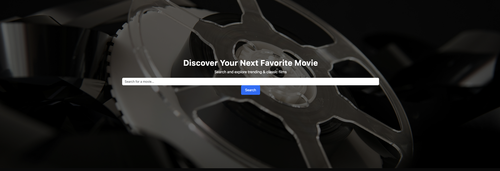

A web-based app to search, track, and explore movies effortlessly.

📽️ Overview
The Movie Search App is a web-based application that allows users to search for movies, view trending films, and explore classic movies based on decades. The app fetches movie data from The Movie Database (TMDb) API and presents an interactive, user-friendly interface using HTML, CSS, JavaScript, and Bootstrap.
✅ Features
✔ Search for movies using TMDb API
✔ View trending movies dynamically fetched from the API
✔ Explore classic movies sorted by decade
✔ Add movies to a Watchlist with Local Storage
✔ Remove movies from the Watchlist
✔ Consistent UI with smooth animations
✔ Dark mode-friendly theme
🚀 Future Enhancements
🔹 Movie Details Page - View detailed information including description, cast, release date, and ratings.
🔹 Genre-Based Filtering - Allow users to filter movies by genre for better discovery.
🔹 User Authentication - Enable users to save their watchlists across different devices.
🛠️ Technologies Used
HTML | CSS | Bootstrap | JavaScript | TMDb API
🔧 Dedicated Technology Breakdown
📌 HTML5 - Structuring the web pages.
📌 CSS3 - Styling and layout improvements.
📌 Bootstrap - Responsive design and components.
📌 JavaScript - Client-side interactivity and API handling.
📌 The Movie Database (TMDb) API - Fetching real-time movie data.
📌 Local Storage - Saving user preferences and watchlists.